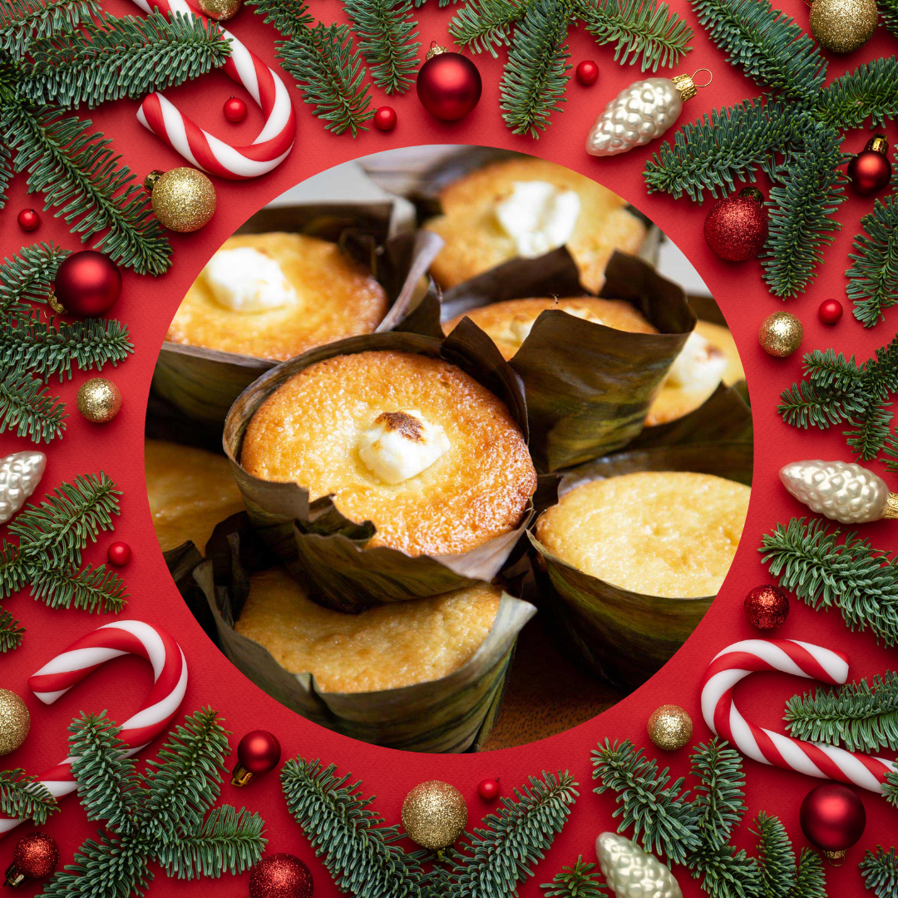
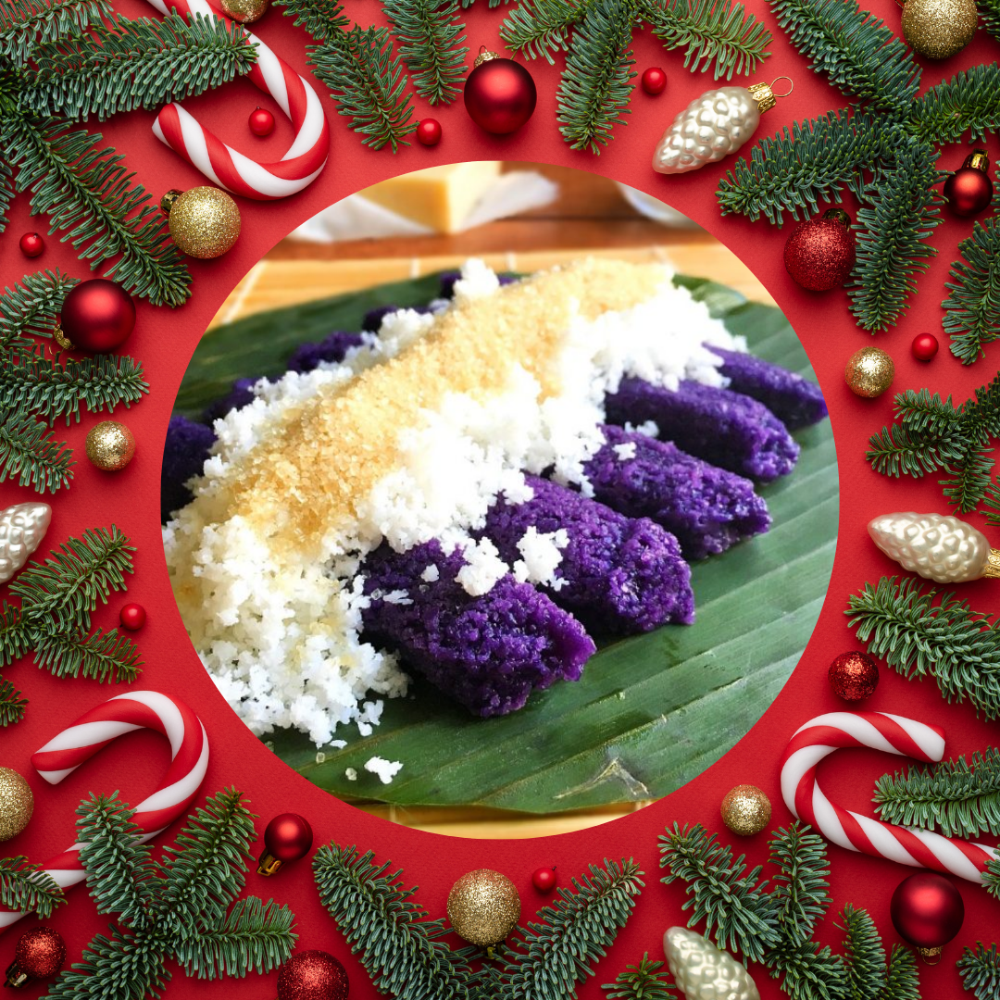
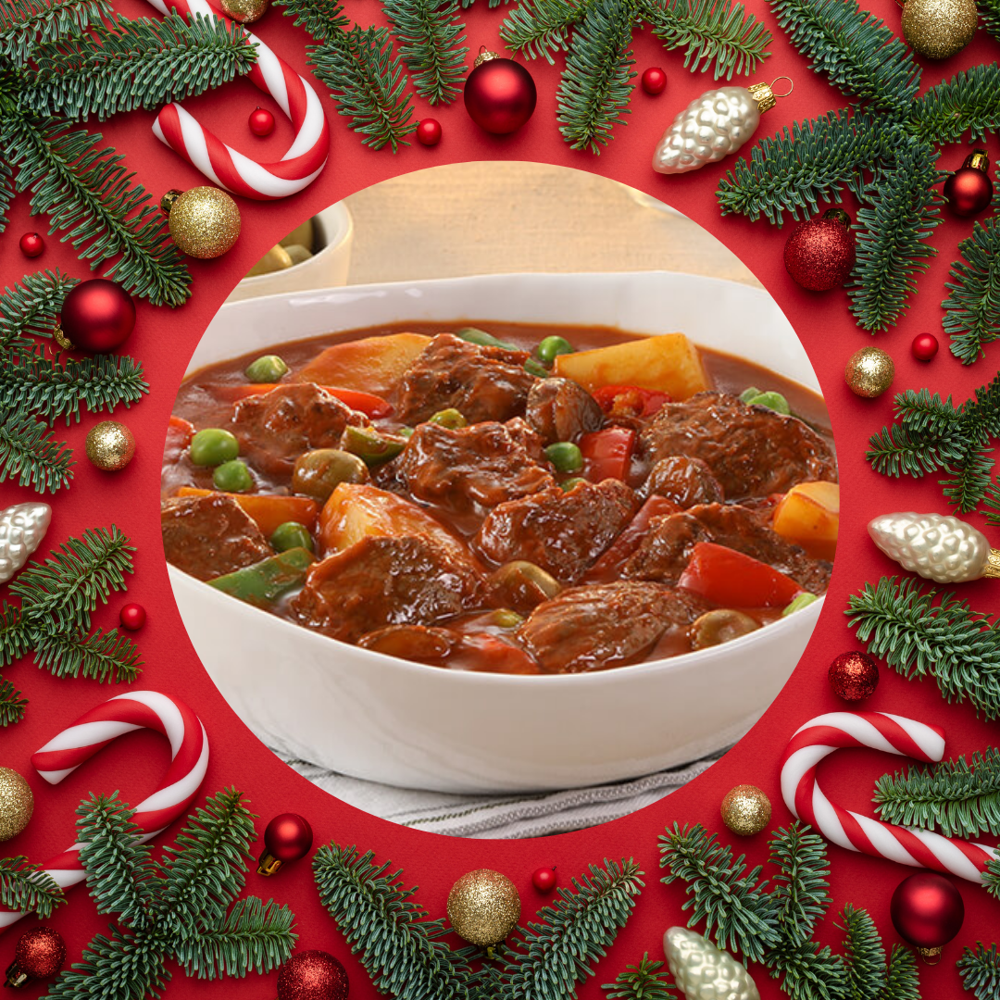
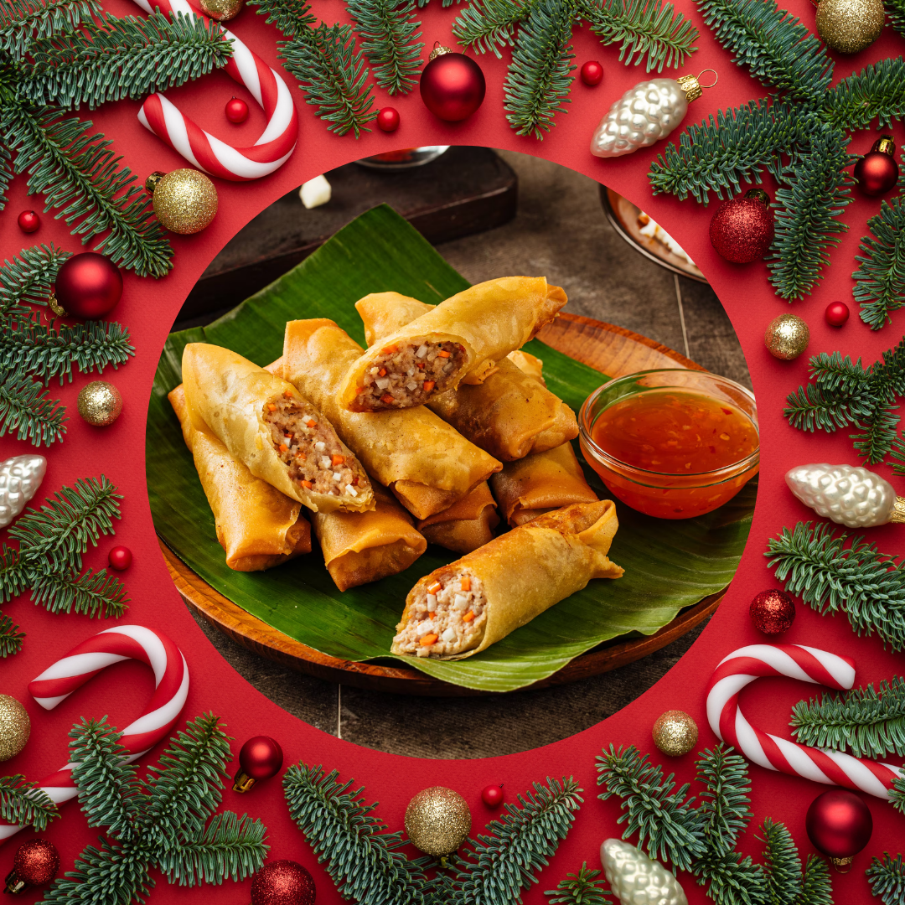
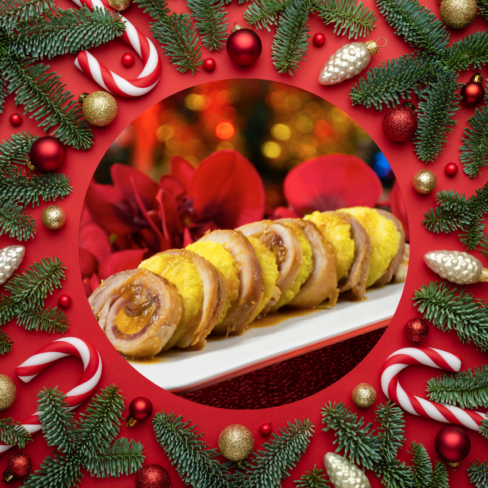
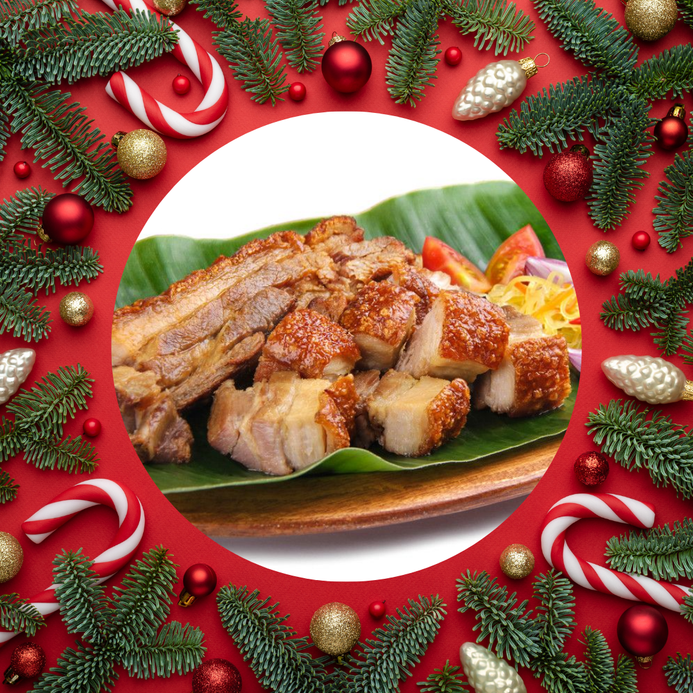
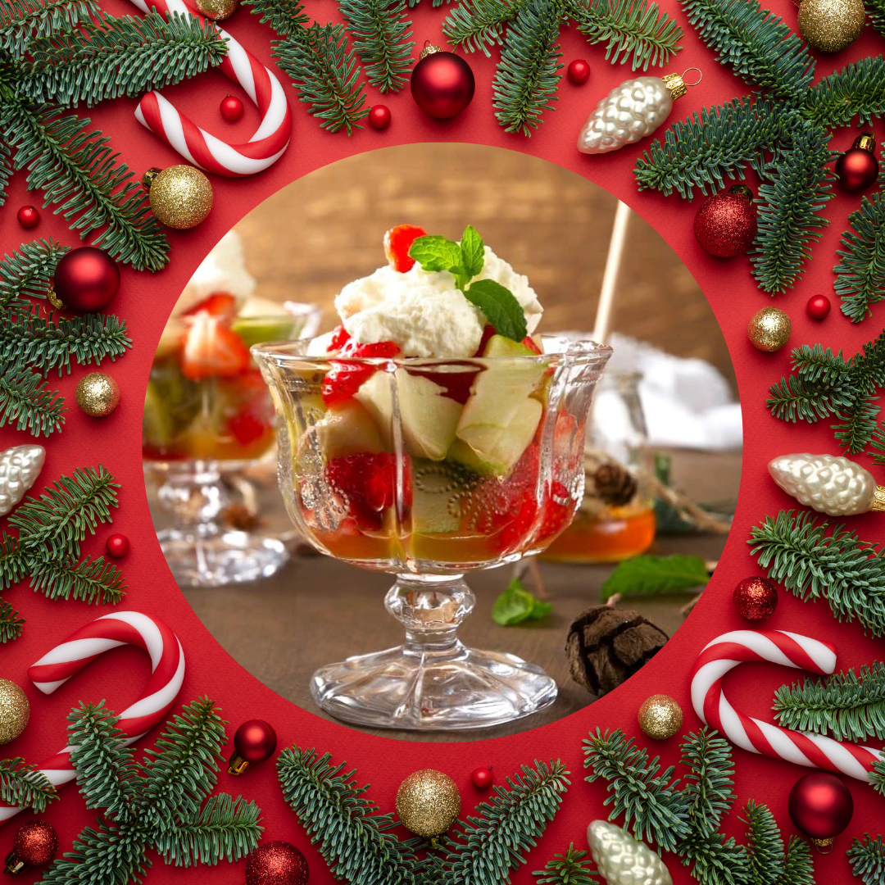
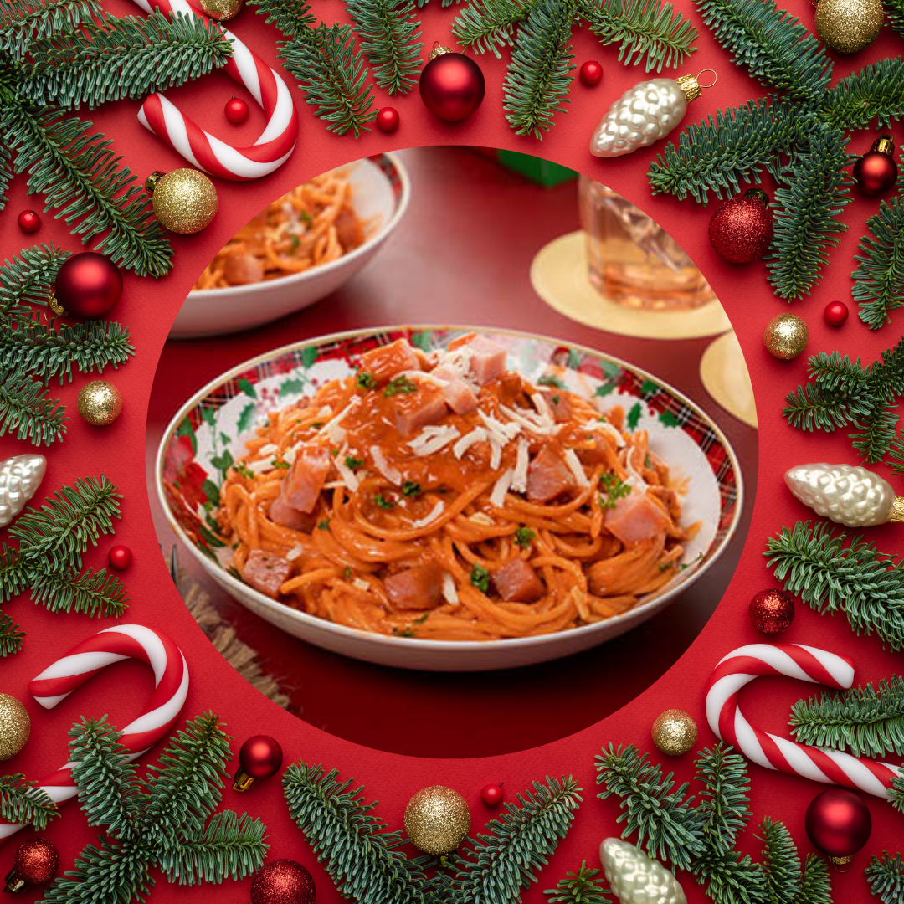
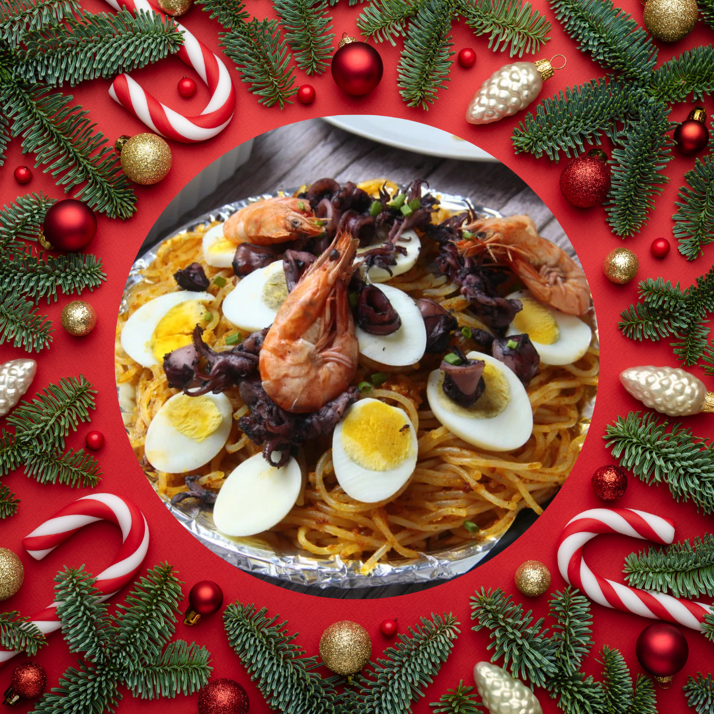
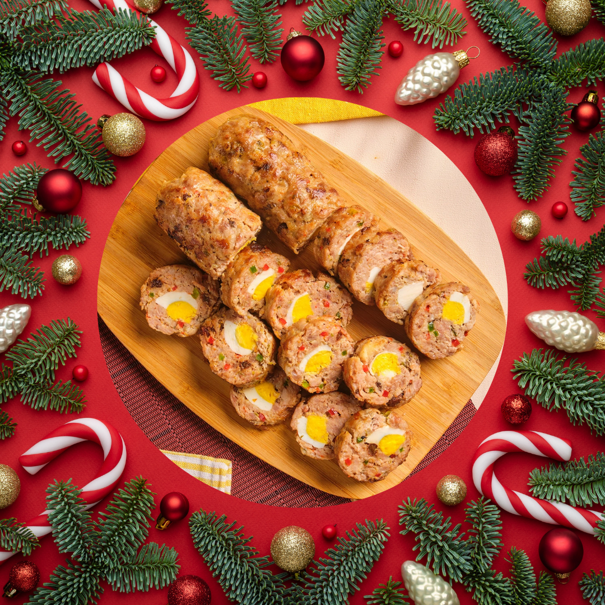

Christmas Recipes
These Filipino cuisines will make your holiday tasteful! Click each picture to view the recipes!
1. Bibingka
a fluffy, lightly sweetened rice cake, is closely associated with Christmas time in the Philippines.
2. Puto Bumbong
is a type of Filipino purple rice cake which is prepared by steaming ground purple rice mixture inside a bamboo tube.
3. Caldereta
A hearty dish with chevon (goat meat), beef, or pork, combined with potatoes, carrots, tomato sauce, and liver spread.
4. Lumpiang Shanghai
The filling is composed of ground pork along with minced onions, carrots, seasonings, and egg.
5. Hamon
Hams have a sweet and sticky glaze, which is also found coating the Filipino Christmas food version.
6. Lechon Liempo
The pig is traditionally cooked on a rotating spit for several hours until it is perfectly golden and crispy.
7. Fruit Salad
The fruit salad is a quintessential Filipino Christmas food and one that is super easy to make
8. Filipino Spaghetti
This Filipino Christmas food is a take on the Italian classic of pasta with ragù sauce, incorporating sweeter flavors than the Italian version.
9. Pancit Malabon
is a Filipino Christmas dish from Malabon, featuring rice noodles cooked in seafood broth with crab fat, fish sauce, and annatto seeds for a yellow color.
10. Embutido
Embutido is a meatloaf-style dish that is also a popular Philippines food for Christmas.
